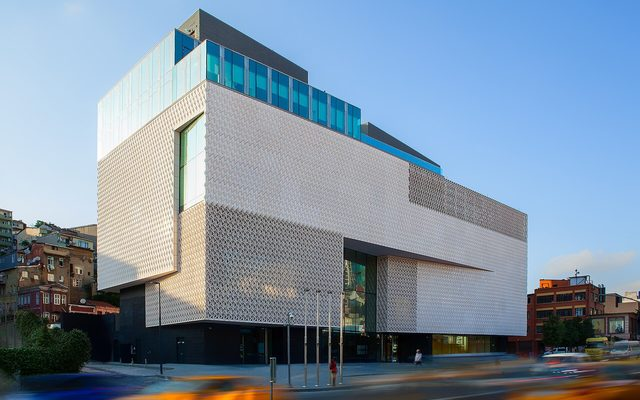
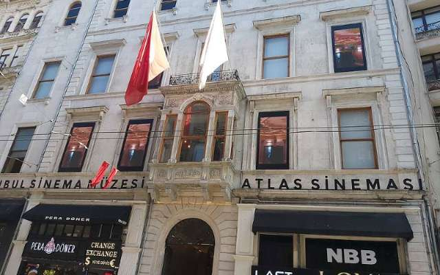
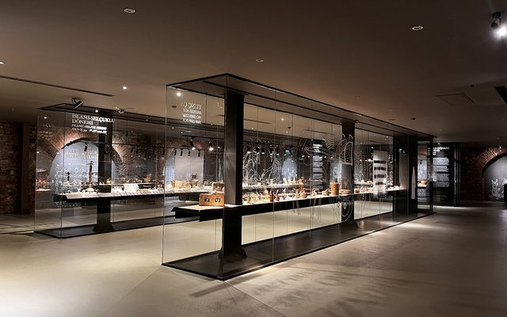
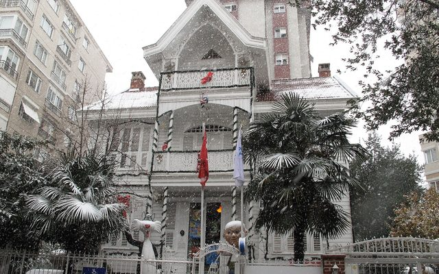

Kültür Varlıkları指南收录了伊斯坦布尔的89个地点：52 博物馆, 21 城堡与历史建筑, 14 宗教建筑, 2 考古遗址。下面是重点推荐、地图和完整列表。
⭐ 重点推荐

1 · 伊斯坦布尔 · 博物馆伊斯坦布尔考古博物馆
伊斯坦布尔考古博物馆位于托普卡帕宫外花园内的居尔哈内，是奥斯曼帝国第一座现代博物馆。在画家兼考古学家奥斯曼·哈姆迪贝伊的主持下发展起来，由三座建筑组成：新古典主义风格的考古博物馆、古代东方博物馆和征服者穆罕默德时期的瓷砖亭。馆藏涵盖来自整个奥斯曼世界的数十万件文物。来自西顿王室墓地的“亚历山大石棺”和“哀悼妇女石棺”举世闻名；古代东方部…

2 · 伊斯坦布尔 · 博物馆大皇宫马赛克博物馆
大皇宫马赛克博物馆就在苏丹艾哈迈德区阿拉斯塔市场下方，展出拜占庭皇帝居住了数百年的大皇宫最令人惊叹的遗迹。这些马赛克曾铺在一个大型柱廊庭院的地面上，年代属于古代晚期。狩猎场景、搏斗的动物、牧人、嬉戏的孩童和神话生物，都用细小的石块和玻璃片拼成，生动得几乎如同绘画。它们在 20…

3 · 伊斯坦布尔 · 博物馆群岛博物馆
2010年在比于卡达岛一座旧机库中开放，通过照片、实物和口述历史讲述王子群岛的故事：从拜占庭流放地到马车往来的避暑生活，再到多元文化的岛上社群。是游览群岛的好起点。
🗺 地图
📍 全部地点 (89)
博物馆 (52)
伊斯坦布尔考古博物馆博物馆大皇宫马赛克博物馆博物馆群岛博物馆博物馆 亚当·密茨凯维奇博物馆博物馆
亚当·密茨凯维奇博物馆博物馆 阿拉·居勒博物馆博物馆
阿拉·居勒博物馆博物馆
阿尔特当代艺术馆博物馆 军事博物馆博物馆
军事博物馆博物馆 阿塔图尔克博物馆（希什利）博物馆
阿塔图尔克博物馆（希什利）博物馆
阿特拉斯 1948 伊斯坦布尔电影博物馆博物馆 圣索菲亚历史与体验博物馆博物馆
圣索菲亚历史与体验博物馆博物馆 贝亚济特浴场文化博物馆博物馆
贝亚济特浴场文化博物馆博物馆 贝伊科兹玻璃水晶博物馆博物馆
贝伊科兹玻璃水晶博物馆博物馆 岑德雷艺术博物馆博物馆
岑德雷艺术博物馆博物馆 埃尔吉兹当代艺术博物馆博物馆
埃尔吉兹当代艺术博物馆博物馆 费内巴切博物馆博物馆
费内巴切博物馆博物馆 费特希耶博物馆博物馆
费特希耶博物馆博物馆 弗洛里亚阿塔图尔克海上别墅博物馆
弗洛里亚阿塔图尔克海上别墅博物馆 加拉塔梅夫拉维修道院博物馆博物馆
加拉塔梅夫拉维修道院博物馆博物馆 “7·15”记忆博物馆博物馆
“7·15”记忆博物馆博物馆 凯末尔·苏纳尔博物馆博物馆
凯末尔·苏纳尔博物馆博物馆 卡泽姆·卡拉贝基尔帕夏博物馆博物馆
卡泽姆·卡拉贝基尔帕夏博物馆博物馆 纯真博物馆博物馆
纯真博物馆博物馆 穆罕默德·阿基夫·埃尔索伊纪念馆博物馆
穆罕默德·阿基夫·埃尔索伊纪念馆博物馆 迷你土耳其公园博物馆
迷你土耳其公园博物馆 煤气厂博物馆博物馆
煤气厂博物馆博物馆 奥尔罕·凯末尔博物馆博物馆
奥尔罕·凯末尔博物馆博物馆 1453全景历史博物馆博物馆
1453全景历史博物馆博物馆 佩拉博物馆博物馆
佩拉博物馆博物馆 皮埃尔·洛蒂博物馆博物馆
皮埃尔·洛蒂博物馆博物馆 拉赫米·M·科奇博物馆博物馆
拉赫米·M·科奇博物馆博物馆
雷赞·哈斯博物馆博物馆 萨德贝克夫人博物馆博物馆
萨德贝克夫人博物馆博物馆 萨伊特·法伊克·阿巴斯亚内克博物馆博物馆
萨伊特·法伊克·阿巴斯亚内克博物馆博物馆 萨基普·萨班哲博物馆博物馆
萨基普·萨班哲博物馆博物馆 SALT加拉塔博物馆
SALT加拉塔博物馆 土耳其宗教基金会书法博物馆博物馆
土耳其宗教基金会书法博物馆博物馆 土耳其伊斯兰艺术博物馆博物馆
土耳其伊斯兰艺术博物馆博物馆 土耳其劳动银行博物馆博物馆
土耳其劳动银行博物馆博物馆 叶海亚·凯末尔博物馆博物馆
叶海亚·凯末尔博物馆博物馆 耶尔德兹瓷器厂博物馆
耶尔德兹瓷器厂博物馆 伊斯坦布尔发电厂能源博物馆博物馆
伊斯坦布尔发电厂能源博物馆博物馆 恰塔尔贾人口交换博物馆博物馆
恰塔尔贾人口交换博物馆博物馆 伊斯兰科学技术史博物馆博物馆
伊斯兰科学技术史博物馆博物馆 伊斯麦特·伊诺努故居博物馆博物馆
伊斯麦特·伊诺努故居博物馆博物馆 伊斯坦布尔海军博物馆博物馆
伊斯坦布尔海军博物馆博物馆 伊斯坦布尔航空博物馆博物馆
伊斯坦布尔航空博物馆博物馆 伊斯坦布尔现代艺术博物馆博物馆
伊斯坦布尔现代艺术博物馆博物馆
伊斯坦布尔玩具博物馆博物馆希尔米·纳基普奥卢相机博物馆博物馆希萨特活历史与立体模型博物馆博物馆坎迪利地震博物馆博物馆伊斯坦布尔机场博物馆博物馆城堡与历史建筑 (21)
 安纳托利亚堡垒城堡与历史建筑
安纳托利亚堡垒城堡与历史建筑 艾纳勒卡瓦克亭城堡与历史建筑
艾纳勒卡瓦克亭城堡与历史建筑 贝勒贝伊宫城堡与历史建筑
贝勒贝伊宫城堡与历史建筑 千柱蓄水池（菲洛克塞诺斯蓄水池）城堡与历史建筑
千柱蓄水池（菲洛克塞诺斯蓄水池）城堡与历史建筑 瓦伦斯引水渠（博兹多安拱桥）城堡与历史建筑
瓦伦斯引水渠（博兹多安拱桥）城堡与历史建筑 多尔玛巴赫切宫城堡与历史建筑
多尔玛巴赫切宫城堡与历史建筑 椴树亭（伊赫拉穆尔亭）城堡与历史建筑
椴树亭（伊赫拉穆尔亭）城堡与历史建筑 小溪亭（屈吕克苏亭）城堡与历史建筑
小溪亭（屈吕克苏亭）城堡与历史建筑 少女塔城堡与历史建筑
少女塔城堡与历史建筑 马斯拉克亭苑城堡与历史建筑
马斯拉克亭苑城堡与历史建筑 拉米兵营（拉米图书馆）城堡与历史建筑
拉米兵营（拉米图书馆）城堡与历史建筑 鲁梅利堡垒城堡与历史建筑
鲁梅利堡垒城堡与历史建筑 狄奥多西城墙城堡与历史建筑
狄奥多西城墙城堡与历史建筑 托普卡帕宫城堡与历史建筑
托普卡帕宫城堡与历史建筑 七塔堡城堡与历史建筑
七塔堡城堡与历史建筑 地下水宫（耶莱巴坦）城堡与历史建筑
地下水宫（耶莱巴坦）城堡与历史建筑 耶尔德兹宫城堡与历史建筑
耶尔德兹宫城堡与历史建筑 君士坦丁纪念柱（切姆贝尔利塔什）城堡与历史建筑
君士坦丁纪念柱（切姆贝尔利塔什）城堡与历史建筑 加拉塔塔城堡与历史建筑
加拉塔塔城堡与历史建筑 谢雷菲耶（狄奥多西）蓄水池城堡与历史建筑菲尔达默蓄水池城堡与历史建筑
谢雷菲耶（狄奥多西）蓄水池城堡与历史建筑菲尔达默蓄水池城堡与历史建筑宗教建筑 (14)
 阿赫里达犹太会堂宗教建筑
阿赫里达犹太会堂宗教建筑 圣伊琳娜教堂宗教建筑
圣伊琳娜教堂宗教建筑 圣索菲亚大清真寺宗教建筑
圣索菲亚大清真寺宗教建筑 保加利亚圣斯特凡教堂（铁教堂）宗教建筑
保加利亚圣斯特凡教堂（铁教堂）宗教建筑 埃于普苏丹清真寺宗教建筑
埃于普苏丹清真寺宗教建筑 普世牧首区与圣乔治教堂宗教建筑
普世牧首区与圣乔治教堂宗教建筑 卡里耶清真寺（科拉教堂）宗教建筑
卡里耶清真寺（科拉教堂）宗教建筑 米赫丽玛苏丹清真寺（埃迪尔内门）宗教建筑
米赫丽玛苏丹清真寺（埃迪尔内门）宗教建筑 吕斯泰姆帕夏清真寺宗教建筑
吕斯泰姆帕夏清真寺宗教建筑 帕多瓦圣安东尼教堂宗教建筑
帕多瓦圣安东尼教堂宗教建筑 苏丹艾哈迈德清真寺（蓝色清真寺）宗教建筑
苏丹艾哈迈德清真寺（蓝色清真寺）宗教建筑 苏莱曼清真寺宗教建筑
苏莱曼清真寺宗教建筑 伊姆拉霍尔·伊利亚斯贝伊清真寺（斯图迪奥斯修道院）宗教建筑
伊姆拉霍尔·伊利亚斯贝伊清真寺（斯图迪奥斯修道院）宗教建筑 王子清真寺（谢赫扎德清真寺）宗教建筑
王子清真寺（谢赫扎德清真寺）宗教建筑